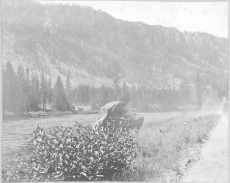
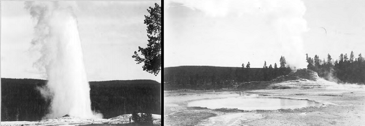
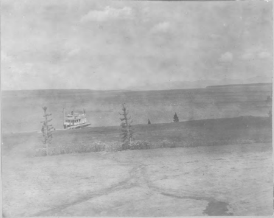
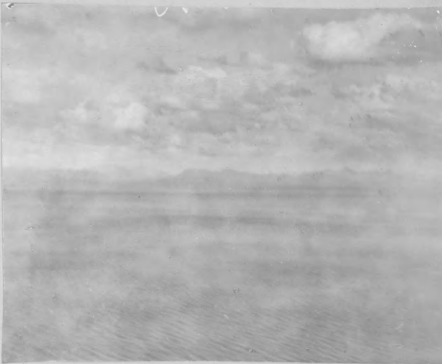
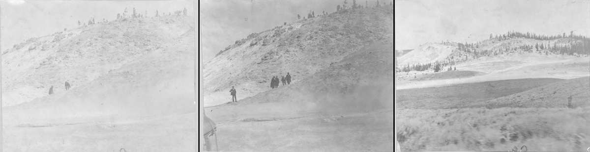
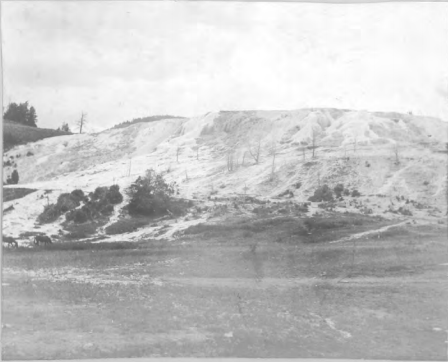

<!DOCTYPE html>
<!--
To change this license header, choose License Headers in Project Properties.
To change this template file, choose Tools | Templates
and open the template in the editor.
-->
<html>
    <head>

        <title>Keyes Yellowstone Park trip</title>
        <meta charset="UTF-8">
        <meta name="viewport" content="width=device-width, initial-scale=1.0">
        
        <link rel="stylesheet" href="https://unpkg.com/leaflet@1.3.1/dist/leaflet.css"
        accesskey=""integrity="sha512-Rksm5RenBEKSKFjgI3a41vrjkw4EVPlJ3+OiI65vTjIdo9brlAacEuKOiQ5OFh7cOI1bkDwLqdLw3Zg0cRJAAQ=="
        class=""crossorigin=""/>
        
         <script src="https://unpkg.com/leaflet@1.3.1/dist/leaflet.js"
         integrity="sha512-/Nsx9X4HebavoBvEBuyp3I7od5tA0UzAxs+j83KgC8PU0kgB4XiK4Lfe4y4cgBtaRJQEIFCW+oC506aPT2L1zw=="
         crossorigin=""></script>
         <script type="text/javascript" src="http://maps.stamen.com/js/tile.stamen.js?v1.3.0"></script>
         <style ype =" text/>css">
             #mapid { height: 800px; }
             </style>

    </head>

    <body>
         <div id="mapid"></div>
         <script> 
             var mymap = L.map('mapid').setView([44.7, -111.1], 12);
             L.tileLayer('https://api.tiles.mapbox.com/v4/{id}/{z}/{x}/{y}.png?access_token={accessToken}', {
			 attribution: 'Map data &copy; <a href="http://openstreetmap.org">OpenStreetMap</a> contributors, <a href="http://creativecommons.org/licenses/by-sa/2.0/">CC-BY-SA</a>, Imagery © <a href="http://mapbox.com">Mapbox</a>',
			 maxZoom: 18,
			 id: 'mapbox.streets',
			 accessToken: 'pk.eyJ1IjoiZG0tbW9uZGF5IiwiYSI6ImNqZjJxY2N5OTBwbW4yenE3aWh5Z3gyZHYifQ.6bforbPseiw4MrNPMBhPsg',
			// maxBounds: bounds,
			 maxBoundsViscosity: .5
			}).addTo(mymap);

var layer = new L.StamenTileLayer("watercolor");
/*var map = new L.Map("element_id",{
                        center : new L.LatLng(44.4280, -110.5885), zoom: 9
});*/
mymap.addLayer(layer);

var drawnicon = L.icon({
    iconUrl: 'images/mapmark48.PNG',
    iconSize: [39,39],
    iconAnchor: [19,35],
    popupAnchor:[1,-25]
    //https://cdn2.iconfinder.com/data/icons/social-hand-drawn-icons/64/social_8-48.png
    });
var wordicon = L.icon({
    iconUrl: 'images/textmarker.PNG',
    iconSize: [39,39],
    iconAnchor: [30,35],
    popupAnchor: [-8,-20]
});
var wordiconRef = L.icon({
    iconUrl: 'images/textmarkerReflect.PNG',
    iconSize: [39,39],
    iconAnchor: [0,35],
    popupAnchor: [18,-20]
});

var markerGoldenGate = L.marker([44.935309, -110.721347],{icon:drawnicon}).addTo(mymap),
    markerFaithful = L.marker([44.460467, -110.828104],{icon: drawnicon}).addTo(mymap),
    markerFountain = L.marker([44.549261, -110.807523],{icon: drawnicon}).addTo(mymap),
    //marker4 = L.marker([44.549261, -110.807523]).addTo(mymap),
    markerMadison = L.marker([44.649587, -110.951056],{icon: drawnicon}).addTo(mymap),
    markerYellRiv = L.marker([44.711278, -110.501974],{icon: drawnicon}).addTo(mymap),
    markerYellThumb = L.marker([44.460975, -110.556562],{icon: drawnicon}).addTo(mymap),
    markerNWYellLake = L.marker([44.540147, -110.425663],{icon: drawnicon}).addTo(mymap),
    EnterMarker = L.marker([44.702668, -111.096728],{icon: wordicon},autoPan = true,title ='Entering the Park').addTo(mymap),
	markerMammothSprings = L.marker([44.972423, -110.699956],{icon: drawnicon}).addTo(mymap),
    markerSulfurMTN = L.marker([44.653718, -110.48504],{icon: drawnicon}).addTo(mymap);

    aug2 = L.polyline([[44.702668, -111.096728],
                       [44.649587, -110.951056]],{
                   color:'#996600',
                   weight: 5,
                   opacity: .7,
                   dashArray: "5, 7"
               }).addTo(mymap),
    aug3 = L.polyline([[44.649587, -110.951056],
                       [44.645171, -110.862466],
                       [44.549261, -110.807523]],{
                   color:'#996600',
                   weight: 5,
                   opacity: .7,
                   dashArray: "5, 7"
      
               }).addTo(mymap),
    markerAug3 = L.marker([44.635, -110.857],{icon: wordiconRef}).addTo(mymap),
    aug4 = L.polyline([[44.549261, -110.807523],
                       [44.460467, -110.828104]],{
                   color:'#996600',
                   weight: 5,
                   opacity: .7,
                   dashArray: "5, 7"
               }).addTo(mymap),
     markerAug4 = L.marker([44.509,-110.820],{icon: wordicon}).addTo(mymap),     
    aug5through10 = L.marker([44.461775, -110.79],{icon: wordicon}).addTo(mymap),
    aug11a = L.polyline([[44.460467, -110.828104],
                       [44.460975, -110.556562]],{
                   color:'#996600',
                   weight: 5,
                   opacity: .7,
                   dashArray: "5, 7"
               }).addTo(mymap),
    markerAug11a = L.marker([44.461775,-110.65],{icon: wordicon}).addTo(mymap),
    aug11b = L.polyline([[44.460975, -110.556562],
                       [44.540147, -110.425663]],{
                   color:'#996600',
                   weight: 5,
                   opacity: .7,
                   dashArray: "5, 7"
               }).addTo(mymap),
    markerAug11b= L.marker([44.503,-110.49],{icon: wordicon}).addTo(mymap),           
    aug12a = L.polyline([[44.540147, -110.425663],
                       [44.653718, -110.48504]],{
                   color:'#996600',
                   weight: 5,
                   opacity: .7,
                   dashArray: "5, 7"
               }).addTo(mymap),
    markerAug12a = L.marker([44.59,-110.452],{icon: wordiconRef}).addTo(mymap),
    aug12b = L.polyline([[44.653718, -110.48504],
                       [44.711278, -110.501974]],{
                   color:'#996600',
                   weight: 5,
                   opacity: .7,
                   dashArray: "5, 7"
               }).addTo(mymap),
    markerAug12b = L.marker([44.69,-110.496],{icon: wordiconRef}).addTo(mymap),
    aug13 = L.polyline([[44.711278, -110.501974],
                        [44.728073, -110.696635],
                        [44.935309, -110.721347],
						[44.972423, -110.699956]],{
                   color:'#996600',
                   weight: 5,
                   opacity: .7,
                   dashArray: "5, 7"
               }).addTo(mymap);
   markerAug13 = L.marker([44.835,-110.709],{icon: wordiconRef}).addTo(mymap), 
   

//aug2.bindPopup("First day of travel in the park").openPopup();
markerAug3.bindPopup("<big><b>First Geysers</b></big><p>\"Arose at 6- heavy mist hanging over the Madison... walked on toward the Fountain Hotel - Struck the Fire Hole River the east fork of the Madison + followed it up... Camped on the Fire Hole River 1&frac12; miles from the Fountain Hotel... After supper [I] went down to the Fountain Hotel with Sayles- Went in to the hotel looking like a couple of desparados... saw wild black bears afar - went up to the Fountain Geyser + by good luck saw an eruption-\
First experience with geysers... Hot Spring[s] mean camp where we can get hot water to wash... Sat around camp fire for a while + then turned in at 9:30\"</p> \n\
<a href='http://www.lib.montana.edu/digital/objects/coll2577/2577-B01-F02.pdf'> -Keyes Journal August 3, 1899</a>",{keepInView: true, autoPanPadding: (50,100)}).openPopup();
   
markerAug4.bindPopup("<big><b>Hiking the Upper Basin</b></big><p>\"Breakfast of fresh meat from the military camp -again- Broke camp at 9 A.M. ... Walked with Sayles around the Upper Basin- Exselsior Geyser-Turquoise Pool-\
 Prismatic pool... Took photographs this morning of the Lamar Basin- After passing the Excelsior + Hell's Half Acre, Sayles + I had lunch at the top of a hill... Went up to Old Faithful + saw eruption 125 ft. high\" </p>\
<a href='http://www.lib.montana.edu/digital/objects/coll2577/2577-B01-F02.pdf'> -Keyes Journal August 4, 1899</a>",{keepInView: true, autoPanPadding: (50,100)}).openPopup();
 
aug5through10.bindPopup("<big><b>Keyes' Injury</big></b><p>\"Walked down to basin with Sayles + Shippee after breakfast at 10 A.M. Broke through the Earth's crust in the crater regions + burnt my ankle. In bed rest of day\"</p><a href='http://www.lib.montana.edu/digital/objects/coll2577/2577-B01-F02.pdf'> -Keyes Journal August 5, 1899</a>\n\
<p>\"In bed all day\"</p><a href='http://www.lib.montana.edu/digital/objects/coll2577/2577-B01-F02.pdf'> -Keyes Journal August 6, 1899</a>\n\
<p>\"In bed all the morning and afternoon. Elk and bear at camp\"</p><a href='http://www.lib.montana.edu/digital/objects/coll2577/2577-B01-F02.pdf'> -Keyes Journal August 7, 1899</a>\n\
<p>\"In bed in morning. Sat up in afternoon and evening.\"</p><a href='http://www.lib.montana.edu/digital/objects/coll2577/2577-B01-F02.pdf'> -Keyes Journal August 8, 1899</a>\n\
<p>\"Sat up all day and watched the geysers and the passing stages filled with tourists... bears came to the piazza + coyotes made considerable noise...\"</p><a href='http://www.lib.montana.edu/digital/objects/coll2577/2577-B01-F02.pdf'> -Keyes Journal August 9, 1899</a>\n\
<p>\"Received 16 letters Miss Anna gave them to me one at a time... spent time watching rain, geysers and tourists... Ate heartily- In the afternoon had first shave since Bozeman 4&frac12; weeks ago. Saved Moustache... beautiful sunset- Bed early\"</p><a href='http://www.lib.montana.edu/digital/objects/coll2577/2577-B01-F02.pdf'> -Keyes Journal August 10, 1899</a>",{keepInView: true, autoPanPadding: (50,100)});
markerAug11a.bindPopup("<big><b>Riding to Yellowstone Lake</b></big><p>\"Arose at 5:30+ dressed + had breakfast. Had foot dressed... started on stage 8:15 A.M. Rode 19 miles from the upper basin to the Thumb- beautiful scenery... arrived at the Thumb at 12 view of the lake + little steamer\"</p><a href='http://www.lib.montana.edu/digital/objects/coll2577/2577-B01-F02.pdf'> -Keyes Journal August 11, 1899</a>",{keepInView: true, autoPanPadding: (50,100)});
markerAug11b.bindPopup("<big><b>Continuing to the Lake Hotel</b></big><p>\"At 2:30 started on for the Lake Hotel- Rode 19 miles more- Fine scenery of Rocky Mts across the lake and pelicans in the distance- arrived at Lake Hotel at 6:30- Carl carreid me upstairs to [my] room facing the Lake on the first floor- meal togther in the room- chocolate ice cream and apple pie Carl had a shave after supper... Bed early. 5 bears  out back of Hotel Carl says\"</p><a href='http://www.lib.montana.edu/digital/objects/coll2577/2577-B01-F02.pdf'> -Keyes Journal August 11, 1899</a>",{keepInView: true, autoPanPadding: (50,100)});
markerAug12a.bindPopup("<big><b>Sulfur Mountains</b></big><p>\"Arose at 7 breakfast in room- went down with the official + sat down after breakfast... Started for the canyon at 9:00 A.M... beautiful morning and pleasant ride Mud Geyser- Hayden Valley- Sulphur mts + hot springs\"</p><a href='http://www.lib.montana.edu/digital/objects/coll2577/2577-B01-F02.pdf'> -Keyes Journal August 12, 1899</a>",{keepInView: true, autoPanPadding: (50,100)});
markerAug12b.bindPopup("<big><b>Passing Friends</b></big><p>\"Passed Jack Bean + Mac at the camp- wanted to stop but couldn't- Upper Falls- rapids - cascade- Lava falls + canyon - Beautiful entering of canyon. arrived at hotel at 12:30. Carl went out to see the canyon in the afternoon... Sayles came up in the evening and stayed a while... Bed at 9:00\"</p><a href='http://www.lib.montana.edu/digital/objects/coll2577/2577-B01-F02.pdf'> -Keyes Journal August 12, 1899</a>",{keepInView: true, autoPanPadding: (50,100)});
markerAug13.bindPopup("<big><b>Leaving the Park</b></big><p>\"No sleep last night. Arose at 7 A.M. ... Seated on  stage at 8. Saw the canyon again + falls + river... drove on to Norris- passed all the fellows walking on the way - lunch at Norris... in afternoon drove on to [Mammoth Hot] Springs - Golden Gate- Devil's Playground... Supper at M.H. Springs.\"</p><a href='http://www.lib.montana.edu/digital/objects/coll2577/2577-B01-F02.pdf'> -Keyes Journal August 13, 1899</a>",{keepInView: true, autoPanPadding: (50,100)});

markerGoldenGate.bindPopup("<big><b>Golden Gate </b></big> <font size = '1'> <a href = 'http://www.lib.montana.edu/digital/objects/coll2577/2577-B01-F01.pdf'> Henry F Keyes</font></a><p>The only differences in a hundred years here appear to be man-made.</p>" , { maxWidth : 975,keepInView: true, autoPanPadding: (50,100) } ).openPopup();

markerFountain.bindPopup("<big><b>Fountain Gyeser</b></big>  <font size = '1'> <a href = 'http://www.lib.montana.edu/digital/objects/coll2577/2577-B01-F01.pdf'> Henry F Keyes</font></a><p>This set of pictures was taken through the afternoon of the third and the morning of the fourth. Mammoth Paint Pots were later renamed to Fountain Paint Pots, most likely to reduce confusion with the Mammoth Springs in the north part of the park.</p>", {maxWidth : 1200,keepInView: true}  ).openPopup();


markerMadison.bindPopup("<big><b>Madison Canyon</b> </big><font size = '1'> <a href = 'http://www.lib.montana.edu/digital/objects/coll2577/2577-B01-F01.pdf'> Henry F Keyes</font></a><p>This photograph was taken on the trail near where Keyes made camp the evening of the second, around modern day Madison Junction.</p>",{maxWidth : 450,keepInView: true, autoPanPadding: (50,100)} ).openPopup();
markerFaithful.bindPopup("<big><b> Old Faithful and Castle Geyser</b></big> <font size = '1'> <a href = 'http://www.lib.montana.edu/digital/objects/coll2577/2577-B01-F01.pdf'> Henry F Keyes</font></a><p>While Keyes was walking around on the fifth, he broke through a crust near some of the thermal features and burnt his foot. He spent the next few days in the area recovering, either laying in bed or sitting and watching passing tourists and the geysers. These pictures could have been taken anytime during the days between the fifth and tenth before he was recovered enough to travel. The mornining of the eleventh marks the beginning of his return trip back to Bozeman and eventually home. </p> ",{maxWidth : 750,keepInView: true}).openPopup();
markerYellRiv.bindPopup("<big><b>Yellowstone River</b></big>  <font size = '1'> <a href = 'http://www.lib.montana.edu/digital/objects/coll2577/2577-B01-F01.pdf'> Henry F Keyes</font></a><p>A side by side comparison of the same location on the Yellowstone river over a hundred years apart. </p>",{maxWidth: 975, keepInView: true, autoPanPadding: (50,100)}).openPopup();
markerYellThumb.bindPopup("<big><b>Yellowstone Lake West Thumb</b></big>  <font size = '1'> <a href = 'http://www.lib.montana.edu/digital/objects/coll2577/2577-B01-F01.pdf'> Henry F Keyes</font></a><p>Keyes spent the morning of the eleventh admiring the view from a stage he was riding. He snapped this picture while the stage was stopped for a lunch break.</p>",{maxWidth: 450,keepInView: true, autoPanPadding: (50,100)}).openPopup();
markerNWYellLake.bindPopup("<big><b>Northwestern Yellowstone Lake</b></big> <font size = '1'> <a href = 'http://www.lib.montana.edu/digital/objects/coll2577/2577-B01-F01.pdf'> Henry F Keyes</font></a><p>The view of the Rockies across the lake was impressive enough to warrant both a mention in his journal as well as a photograph. Keyes could have taken this photo anytime while on the stage, riding to the Lake Hotel or from the hotel itself.</p>",{maxWidth: 450,keepInView: true, autoPanPadding: (50,100)}).openPopup();
markerSulfurMTN.bindPopup("<big><b>Sulfur Mountain and Springs</b></big> <font size = '1'> <a href = 'http://www.lib.montana.edu/digital/objects/coll2577/2577-B01-F01.pdf'> Henry F Keyes</font></a> <p>The People in this set of photos may be Keyes travelling companions, as he passed them at some point during his travels on the twelfth.</p>",{maxWidth: 1200, keepInView: true}).openPopup();
markerMammothSprings.bindPopup("<big><b>Mammoth Hot Springs</b></big><font size ='1'><a href = 'http://www.lib.montana.edu/digital/objects/coll2577/2577-B01-F01.pdf'> Henry F Keyes</font></a><p>Keyes' last stop in Yellowstone was here at Mammoth Hot Springs for dinner before he left the park and boarded a train bound for Bozeman.</p>" ,{maxWidth: 450,keepInView: true, autoPanPadding: (50,100)}).openPopup();
EnterMarker.bindPopup("<big><b>Entering the Park</b></big><p> \"Crossed the western boundary of the Yellowstone Park at just\n\
2 P.M. - Rode 4 miles to the Madison River and then turned from the road and camped at its banks\"</p> <a href='http://www.lib.montana.edu/digital/objects/coll2577/2577-B01-F02.pdf'> -Keyes Journal August 2, 1899</a> ",{keepInView: true, autoPanPadding: (50,100)}).openPopup();


//44.702668, -111.096728 location where Keyes entered the Park
//44.549261, -110.807523   location for "formation at fountain geyser","mammoth paint pots" 
//44.460467, -110.828104 location for the old faithful photos
//44.653718, -110.48504 location for sulphur mountain/sulphur hot springs photos
//44.935309, -110.721347  location for  golden gate photos 
//44.967040, -110.709202 location for mammoth hot springs photo
//44.463791, -110.835882 location for castle geyser photos
//44.707953, -110.502685 possible location for the yellowstone river photo
//44.460975, -110.556562 location for yellowstone thumb photo
//44.540147, -110.425663 location for yellowstone lake photo
L.Control.Watermark = L.Control.extend({
    onAdd: function(map) {
        var img = L.DomUtil.create('img');
		img.src = 'images/msu-library-square.png';
        img.style.width = '200px';

        return img;
    },

    onRemove: function(map) {
        // Nothing to do here
    }
});

L.control.watermark = function(opts) {
    return new L.Control.Watermark(opts);
};

L.control.watermark({ position: 'bottomleft' }).addTo(mymap);


mymap.on('popupopen', function(e) {
    var px = mymap.project(e.popup._latlng); 				  
    px.y -= e.popup._container.clientHeight/1.7				
    mymap.panTo(mymap.unproject(px),{animate: true}); 		
});

         </script>
         
         
         
         
    </body>
</html>
